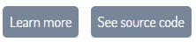
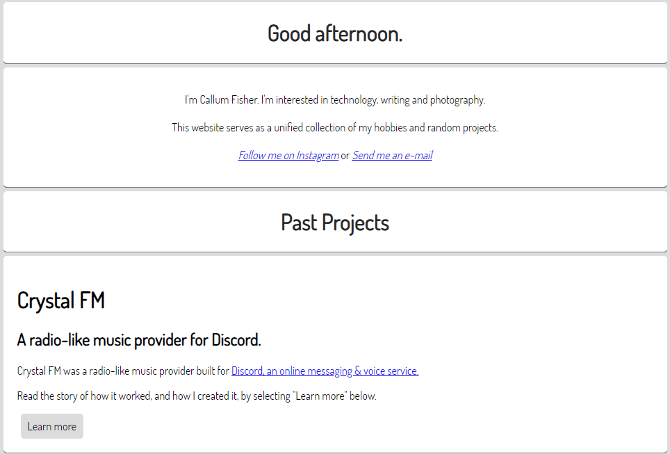
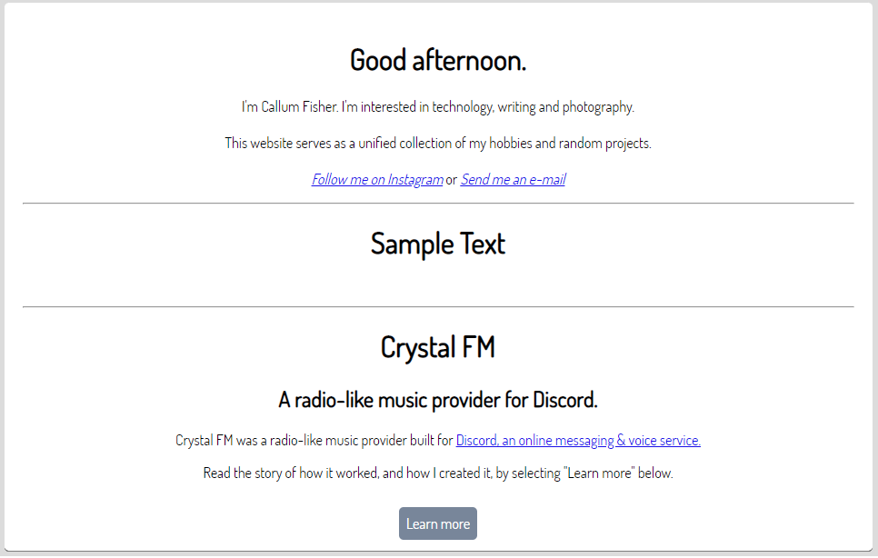
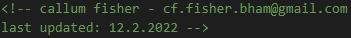
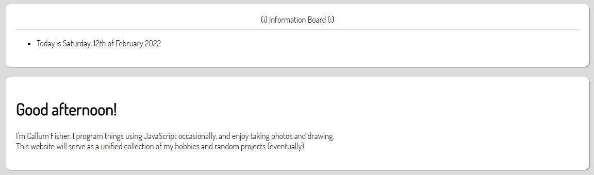
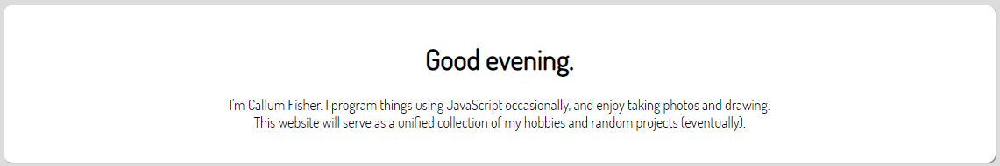

Website Changelog
Looking back on the progress of a project can be a great source of motivation, so I'm creating this changelog to look back on in the future.
Changes to articles will not be recorded here.
7th August 2023
+ Created the Alias Musuem page.4th January 2023
= Changed font from "Dosis Book" to "Dosis Medium"+ Created About page.
20th December 2022
= Made homepage better.+ Starting adding "Edited as well as "Published" dates to pages.
15th December 2022:
= Reversed Website Changelog order to show newest first.- Removed the "See latest" button from the Website Changelog.
- Removed the old Website Changelog page. I realized that changelog really belongs to a previous project.
14th December 2022:
= Made page titles and descriptions more consistent.8th December 2022:
= Improved the formatting of the homepage.= Improved button colour palettes.
= Improved consistency between pages.
= Shortened some dates (E.G.: from "8th December 2022" to 8.12.2022).
= Replaced center tags with appropriate CSS.
= Updated 404 page.
- Removed unused assets.
18th June 2022:
= Improved the formatting of the homepage.= Improved button colour palettes.
= Slightly darkened text in dark mode to reduce eye-strain.
= Combined separate elements on the homepage into a singular box for a clearer layout.

Before:

After:

31st May 2022:
= Improved formatting.= Improved background & hyperlink colours in dark mode.
= Extended padding on navigation bar to fill width of the screen.
+ Added missing alt text for some images.
+ Added custom scroll bar.
- Removed unused assets.
22nd May 2022:
= Improved formatting.15th May 2022:
- Deleted the Projects page (projects are now listed in the Directory).7th May 2022:
= Improved buttons.21st April 2022:
+ Added extra separators between sections on some pages.= Fixed incorrect header sizes in "Notes" sections of all pages.
= Improved formatting of HTML in some pages.
20th April 2022:
= Shortened "Notes" sections of all pages.= Tidied up the credits.
13th April 2022:
= Fixed incorrect pixels in the favourites icon.= Changed some button colours.
+ Added a "Show credits" button to the Directory page.
12th April 2022:
= Changed favourites icon:
= Rounded off the bottom edges of separators.
= Improved button colours in dark mode.
+ Created a new Projects page to document projects. I'll produce reports on all of my projects here.
20th March 2022:
= Fixed buttons on old website changelog.= Improved button colours.
= Updated page titles.
13th March 2022:
= Moved styling for some buttons from HTML to stylesheets.= Made buttons more consistent and more visible.
- Removed the Articles page.
2nd March 2022:
= Made the background colour in dark mode consistent with other UI elements.= Changed outdated e-mail addresses in some files.
12th February 2022:
= Updated e-mail addresses and dates in files for better consistency.
= Made the Directory (homepage) a bit sleeker: Centered the welcome text and merged the functions of the infoboard with the welcome text.
Old:

New:

6th February 2022:
= Updated Easypea Games.5th February 2022:
= Changed hyperlink colour in dark mode to be more readable.= Updated e-mail addresses in files.
- Removed the logo from the homepage.
- Removed unused pages.
3rd February 2022:
+ Began a new changelog.- Removed unused code for the old article viewer.
Go back to top